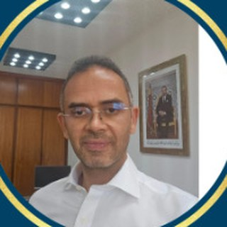
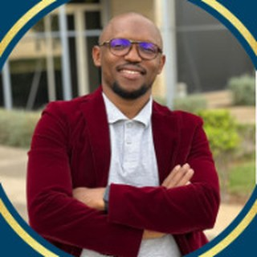
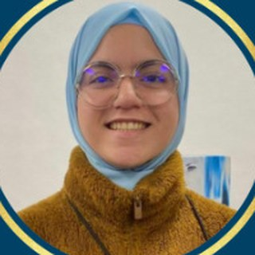
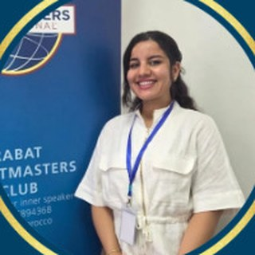
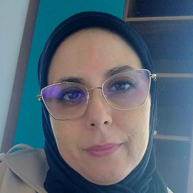
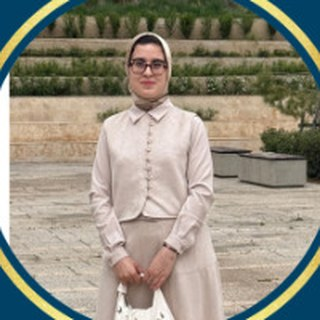

Depuis 2018, le Rabat Toastmasters Club aide chacun à parler en public avec confiance, à écouter, à évaluer et à diriger — dans une ambiance bienveillante, un samedi après l'autre.
Chaque mois, un cycle de trois réunions autour d'un même thème pour progresser pas à pas. Les invités sont les bienvenus à chaque séance.
Le Rabat Toastmasters Club offre un cadre structuré, amical et bienveillant pour développer ses compétences en communication et en leadership. Nos réunions sont dynamiques, rythmées et divertissantes.
Chaque membre progresse à son rythme à travers le programme Pathways, et reçoit des évaluations constructives sur sa voix, sa gestuelle, son contact visuel et son improvisation.
Structurer, captiver, convaincre.
Les Table Topics : penser vite, parler clair.
Un retour précis et bienveillant à chaque intervention.
Animer une réunion, tenir un rôle, servir au bureau.
Un groupe de passionnés entreprend d'implanter Toastmasters au Maroc, en apprenant le programme par eux-mêmes.
Le Casablanca Toastmasters Club ouvre la voie ; la dynamique gagne la capitale.
Après huit mois de travail, le club est officiellement reconnu par Toastmasters International (club n° 05894368).
Pendant la pandémie, les réunions continuent en ligne et en direct sur Facebook — sans jamais perdre le lien.
Aux côtés de l'Espagne, du Portugal, d'Andorre et de Gibraltar : accès aux formations, aux concours et à la vie du district.
Plus de 300 réunions célébrées, des réunions conjointes internationales, des concours d'Area et de District, et une communauté de plus de 1 300 abonnés.
Organisation éducative à but non lucratif, Toastmasters International développe la confiance et les compétences oratoires grâce à un réseau mondial de clubs qui se réunissent en présentiel et en ligne.
Le 22 octobre 1924, Ralph C. Smedley fonde le premier club au YMCA de Santa Ana, en Californie. Ce « Club n° 1 » existe toujours. Le siège est aujourd'hui dans le Colorado.
Donner à chacun les moyens de devenir un communicant et un leader plus efficace.
Des parcours d'apprentissage en ligne, chacun organisé en cinq niveaux, pour progresser à son rythme.
Du club à l'Area, à la Division puis au District : les meilleurs orateurs peuvent aller jusqu'au Championnat du monde de prise de parole en public.
Notre district réunit les clubs d'Espagne, du Portugal, d'Andorre, de Gibraltar et du Maroc, avec des concours et formations en plusieurs langues.
Officier de club, directeur d'Area ou de Division, responsable de district : chaque niveau est une école de leadership bénévole.
Chaque réunion suit un déroulé précis et chaque participant peut y tenir un rôle. En tant qu'invité, vous observez librement — et vous prenez la parole seulement si vous le souhaitez.
Le Sergent d'armes ouvre la séance, le Président souhaite la bienvenue aux invités.
Le maître de cérémonie présente le thème et les rôles de la réunion.
Des membres présentent un projet Pathways de 5 à 7 minutes.
Des sujets surprises, 1 à 2 minutes d'improvisation.
Chaque discours reçoit une évaluation orale constructive.
Chronométreur, grammairien, compteur de tics, puis vote et remise des prix.
Anime et enchaîne la réunion.
Présente un discours préparé.
Donne un retour sur un discours.
Propose les sujets d'improvisation.
Évalue la réunion dans son ensemble.
Fait respecter le temps de parole.
Relève le mot du jour et les belles tournures.
Repère les « euh », « donc », « voilà »…
Élus par les membres pour un an, les officiers organisent les réunions, accompagnent la progression de chacun et représentent le club au sein du District 107.

Président
Bienvenue au Rabat Toastmasters Club : ici, chaque voix compte et chaque progrès se célèbre.

VP Éducation

VP Adhésions
VP Relations publiques

Trésorière

Secrétaire

Sergent d'armes
Président sortant
Concours, distinctions, célébrations et conférences du district : retour sur quelques moments qui ont marqué le club.
Un cap fêté ensemble, avec gâteau, ballons et prix pour les meilleurs orateurs du jour.
Le club a accueilli le concours d'Area au Centre Iklyl à Rabat, avec notamment Mohamed Diallo, Mamady Bangoura et Najat Lebzar parmi les candidats.
Mamady Bangoura et Mohamed Diallo ont porté les couleurs du club au concours en français, jusqu'au concours du District 107.
Les membres participent aux conférences et galas du district, comme le dîner de gala « Heritage in Harmony ».
Renouveler mon adhésion me permet de continuer à progresser en prise de parole et en leadership, tout en tissant des liens et des amitiés avec des personnes inspirantes.
Pas besoin d'expérience : il suffit de venir. Beaucoup de nos membres ont franchi la porte avec le trac — ils animent aujourd'hui des réunions.
Remplissez le formulaire : nous vous confirmons la date de la prochaine réunion.
Découvrez l'ambiance, les rôles et le programme. Aucune obligation de parler.
Adhérez à Toastmasters International via le club et commencez votre parcours Pathways.
Remplissez ce formulaire : un membre du bureau vous recontacte pour confirmer votre venue.
Votre demande est bien arrivée. Nous vous recontactons très vite pour confirmer. À samedi !
Oui. Vous pouvez venir en invité autant de fois que nécessaire avant de décider d'adhérer.
Non. Vous pouvez simplement observer. Si l'envie vous prend, vous pourrez tenter un Table Topic de une à deux minutes.
Nos réunions se tiennent en trois langues : français, anglais et arabe. Chacun peut s'exercer dans la langue de son choix, et le club participe aux concours du District 107.
L'adhésion comprend la cotisation à Toastmasters International et les frais du club. Notre VP Adhésions vous communique le montant en vigueur.
Aucun. Débutants, étudiants, cadres, entrepreneurs : chacun progresse à son rythme, avec un mentor s'il le souhaite.